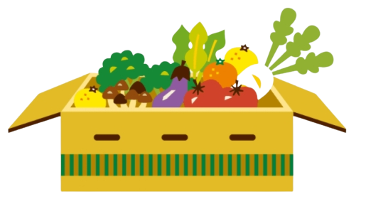

Les fruits et légumes
Pourquoi les fruits sont-ils importants ?
Les fruits, c'est la nature à portée de main ! Ils sont pleins de vitamines et de minéraux qui boostent notre système immunitaire et gardent notre corps en bonne santé. Ils sont également riches en fibres, ce qui nous aide à bien digérer et à ne pas avoir trop faim entre les repas. Les fruits contiennent aussi des antioxydants, des substances qui protègent nos cellules et luttent contre les maladies. Et n'oublions pas, ils sont gorgés d'eau, ce qui nous aide à rester bien hydratés. Pour être en pleine forme, n'hésitez pas à manger une variété de fruits chaque jour.
Et pourquoi manger des légumes ?
Les légumes, ce sont nos meilleurs alliés pour une alimentation saine et équilibrée. Tout comme les fruits, ils sont remplis de vitamines, de minéraux et de fibres qui boostent notre santé, régulent notre corps et nous aident à digérer facilement. Les légumes sont aussi riches en antioxydants, des protecteurs qui préservent nos cellules et préviennent les maladies. Ils contiennent beaucoup d'eau, ce qui contribue à notre hydratation. Pour un bien-être optimal, pensez à intégrer une variété de légumes dans vos repas quotidiens.